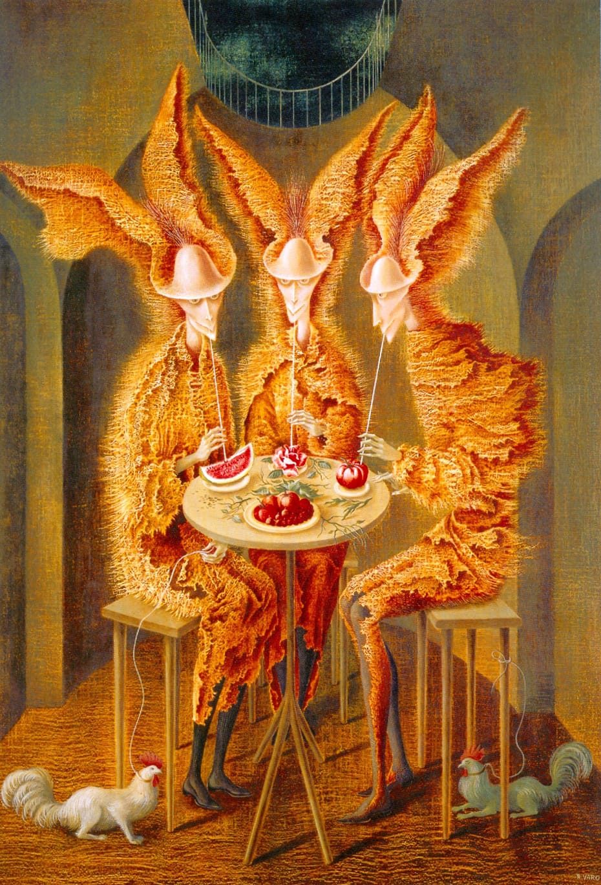
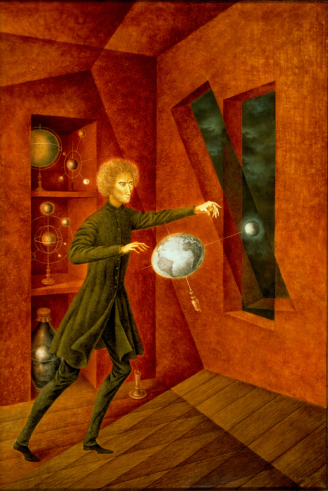
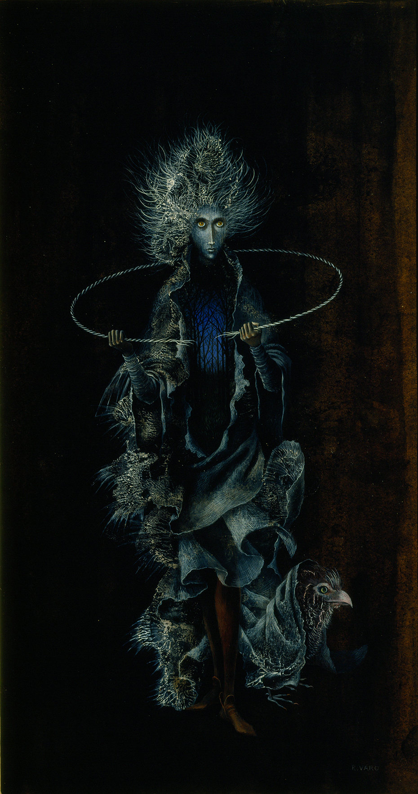

Mujer saliendo del psicoanalista

Vampiros vegetarianos

Fenómeno de Ingravidez

Rompiendo el circulo vicioso
Remedios Varo (1908-1963) fue una pintora surrealista española que se destacó por sus obras evocadoras y fantásticas. Nació en Anglès, España, y posteriormente se trasladó a México, donde desarrolló gran parte de su carrera artística. Varo estuvo influenciada por el surrealismo y compartió amistad y colaboración con otros artistas surrealistas, como Leonora Carrington. En sus pinturas, Varo exploraba mundos imaginarios poblados por seres misteriosos y elementos simbólicos. Su enfoque meticuloso en la técnica y la riqueza de detalles en sus obras la distinguieron en el movimiento surrealista. Su obra a menudo abordaba temas como la alquimia, la magia y la transformación, y su estilo único fusionaba lo onírico con lo realista. Aunque no alcanzó la misma notoriedad que algunos de sus contemporáneos, el legado de Remedios Varo ha crecido con el tiempo, y su obra sigue siendo apreciada por su imaginación y habilidad técnica.
Mujer saliendo del psicoanalista
Vampiros vegetarianos
Fenómeno de Ingravidez
Rompiendo el circulo vicioso